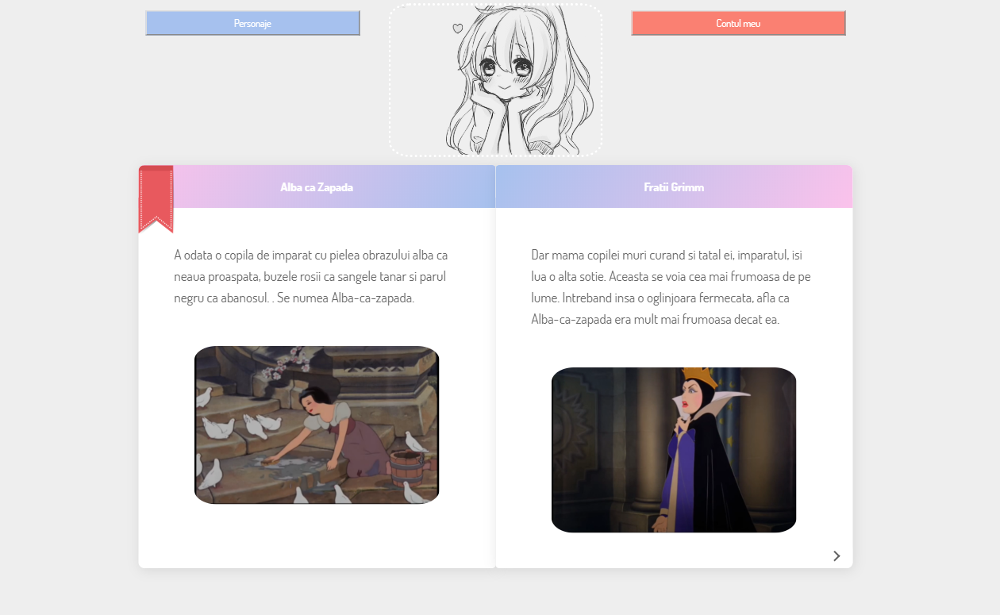

Inregistrare
Inregistrarea se face accesand site-u la adresa http://localhost:12345/index.php/.
Dupa ce formularul e completat cu: numele de familie, prenumele, username-ul, email-ul, parola si confirmarea parolei, apasati butonul
Creaza contul.
Pagina de start
Putem cauta povestile in functie de anumite filtre.
Primul este: dupa varsta. Povestile fiind categorisite dupa varsta potrivita fiecarii povesti.
Pentru a putea face acest lucru tot ce aveti de facut este sa apsati pe butonul Categorii si o lista va aparea. De acolo
sunteti liberi sa selectari orice doriti.

Aici este pagina cu povesti potrivite pentru copii de 9-11 ani.

Al doilea criteriu este dupa cuvinte cheie (tags). Astfel incat scriind in bara de search anumite cuvinte precum "printesa",
"fata", "alba ca zapada", ne vor aparea in pagina de start doar povestile ce au legatura cu acele cuvinte.

Am folosit cuvantul cheie printesa.
Pentru a reveni la pagina de start tot ce trebuie sa faceti este sa apasati pe logo, imaginea de sus-mijloc.
Povesti
O data ce ai selectat o povste pentru a o citi vei fi directionat catre pagina de unde poti citi acea poveste.
Un exemplu ar fi "Alba ca Zapada si cei 7 pitici" la adresa
http://localhost:12345/poveste/poveste.php?story=2?page=1.
Fiecare poveste in parte are propria adresa iar cand acea adresa este accesata progresul citirii textului acelei povesti va fi salvat si poate
fi vazut pe profilul userului.

Poti sa vizualizezi urmatoarele pagini sau cele anterioare, folosind butonul din dreapta jos a paginii cartii, respectiv butonul
din stanga jos pentru pagina anterioara.
Unele pagini ale povestilor contin variante de ranspus pentru amuzamentul copiilor si diversitate. Cand ajungeti la o astfel de pagina butonul
pentru urmatoarea pagina dispare si puteti avansa doar alegand o varianta.
In acest exemplu avem variantele A si B.
Pentru fiecare din variante povestea va continua insa luand in considerare alegerea facuta.
Varianta A

Varianta B

Pentru a reveni la pagina de start tot ce trebuie sa faceti este sa apasati pe logo, imaginea de sus-mijloc.
Personaje
Pentru a putea vedea cateva detalii despre personajele basmelor trebuie sa da-ti click in primul rand pe o poveste pentru a o citi.
Aici va trebui sa apasati butonul Personaje
care va va directiona catre pagina solicitata.

In cazul de fata avem personajele din "Alba ca Zapada".

Apasand pe butonul Inapoi la poveste ne intoarce la poveste, la pagina la care am ramas pentru a putea citi in continuare.
Pentru a reveni la pagina de start tot ce trebuie sa faceti este sa apasati pe logo, imaginea de sus-mijloc.
Profil
Pentru a ajunge pe pagina profilului tau trebuie sa apesi pe butonul din dreapta sus Contul meu, apoi sa
selectezi Profil.
In pagina de profil putem vedea povestile care sunt in decurs de citire, povestile citite si povestile scrise de userul conectat.
Iar in dreapta sunt cateva informatii despre utilizator.
Pentru a vedea listele cu povesti din fiecare categorie tot ce trebuie sa faci este sa apesi pe butoanele viu colorate.
Aici vom putea vedea si progresul citirii textului, iar daca selectam o poveste vom fi diretionati la pagina la care am ramas
pentru a putea continua sa citim.
Scrie o poveste
Pentru a beneficia de obtiunea de a scrie singur o poveste ce va aparea pe pagina de start si in profilul tau, la
povestile mele trebuie sa ne aflam pe pagina profilului.
Apasand butonul Scrie o poveste vom fi redirectionati catre un formular ce trebuie completat cu:
titlul povestii, autorul (acesta este completat automat dar se poate schimba), o scurta introducere, o imagine de preferat si pentru
ce varsta este potrivita aceasta poveste
.
Apoi se va apasa butonul Incepe sa scrii.

Pagina ce ne va aparea apoi ne permite sa scriem povestea pe pagini. Putem adauga text si/sau imagine. Pentru a trece la
pagina urmatoarea trebuie sa apasam pe sageata din stanga jos.

Cand povestea a fost finalizata trebuie sa apasati pe butonul Termina si o sa fii directionat catre pagina de start.

Vei vedea ca daca intri pe povestea scrisa de tine iti vor aparea doua butoane Edit pentru fiecare pagina.
Cu ajutorul acestora, poti sa modifici pagina deja scrisa sau sa continui sa-ti scrii povestea.

Adauga personaje la povestea ta
Poti sa adaugi personajele povestii tale. Trebuie doar sa selectezi povestea ta, sa apesi pe butonul
Personaje, iar daca povestea este scrisa de tine in dreapta jos iti va aparea butonul Adauga personaj.

Daca dai click pe el iti va aparea un formular. Completeaza-l si apoi apasa butonul Adauga in cazul in care
vrei sa adaugi personajul respectiv, Inchide in caz contrar.


Pentru a reveni la pagina de start tot ce trebuie sa faceti este sa apasati pe logo, imaginea de sus-mijloc.